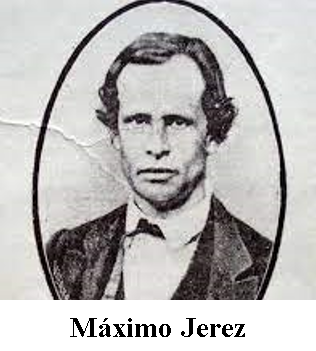
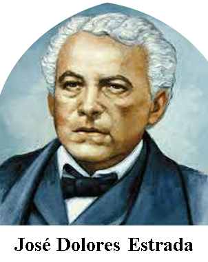
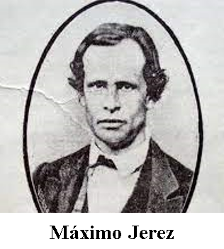
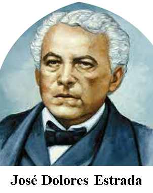

INDEPENDENCE OF NICARAGUA
It was the month of September of the year 1821. The inhabitants of the Spanish province of Nicaragua, like those of the others in the region, considered that it was time for a radical Independence. The bloody independence wars in other regions of the continent and other factors led them to achieve that dream: their birth as a new and small nation, free and sovereign.
There were several factors that led the colonies to decide their separation from Spain: the emancipatory example of the British colonies in the north, the French enlightenment that brought with it new ideals, the strong control and burden of taxes by the Spanish crown and the weakening progressive of it.
September 15, 1821 was the date that marked an important event in the history of Central America: the signing of the Declaration of Independence of Guatemala, El Salvador, Honduras, Nicaragua and Costa Rica.
PROCERES OF NICARAGUA
On September 15 I was sitting in the Assembly, that of the Próceres, who would give us emancipation. When one of the most illustrious heroes, José Cecilio del Valle, seemed to conquer the spirits to delay the proclamation of Independence, Larreynaga and other illustrious heroes, in speeches fired with passion and reason, tipped the scales of immediate freedom, in the middle of the applause of the people that filled the galleries.
The dependency of Central America began in December 1813, in the Convent of Belén, Ciudad Antigua, Guatemala, directing the famous conspiracy known as the "Conjura de Belén". As a consequence of Father Ruiz's involvement in the conspiracy, he was captured on the night of December 1, exactly one day before t he revolutionary plan was carried out, which failed due to Pudenciano de la llana's betrayal.
Guerrero (Nagarote, December 21, 1820 - León, March 12, 1873) was a Nicaraguan soldier and politician, who held the Presidency of the Republic between November 15, 1857 and March 1, 1867 as the first president. of the so-called "Thirty Conservative Years" period.
He was a Nicaraguan lawyer, politician and military man. He is considered the main liberal thinker in the history of Nicaragua. He was also a fervent champion of Central American unionism.
He participated in several combats that were fought for our independence in the city of Granada. In 1827, he appears in the first detestable and fratricidal war of Cerda and Arguello, with the rank of Sergeant of the Argüellista troops.
He was a Nicaraguan teacher remembered for his heroic deeds in the first battle of Rivas on June 29, 1855 against the Democrats of Castellón and the filibusters of William Walker during the Civil War (1854-July 18, 1856) that faced the sides legitimist and democratic, before the so-called Nicaraguan National War (July 18, 1856-1857).

 


